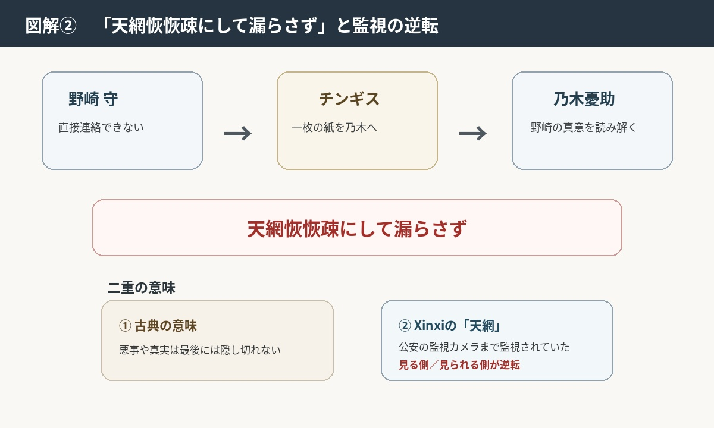
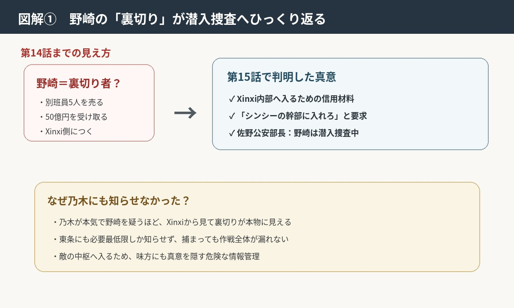
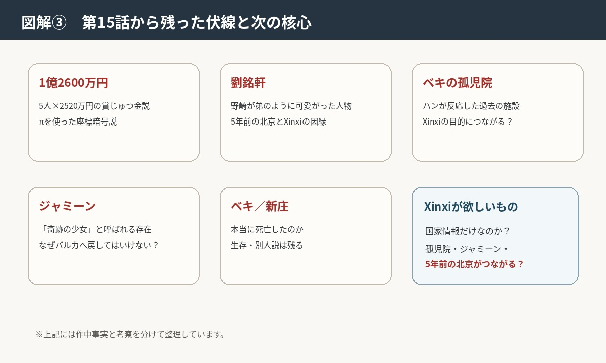

野崎は裏切っていなかった――
潜入捜査、1億2600万円、劉銘軒の謎
第15話は、前回まで「本当に裏切ったのか？」と疑われていた野崎の真意が大きくひっくり返る回。
特に、東条への尋問、チンギスから渡された言葉、そして佐野公安部長から明かされた野崎の過去が重要です。乃木が東条・佐野・チンギスの3人を手掛かりに野崎を追う展開になりました。

1．冒頭――東条翔太のおもらしと、乃木憂助が突きつけた「過去の時間」
第14話の最後、逃走する東条翔太の前に現れた乃木。警視庁サイバー対策課の東条は、島根県雲南市にいた。
第1シリーズから知っている人物同士なのに、今回は完全に追う側と追われる側。第15話は、いきなり「よぉ、東条……」から始まる。
東条は乃木憂助に拘束され、Fによる尋問を受ける。そして開始早々、東条翔太は恐怖と緊張のあまり失禁。
東条翔太は必死に弁明するが、Fと交代した乃木憂助はかなり冷静に尋問していく。乃木は東条の証言だけではなく、東条がいつ、どのタイミングで野崎から指示を受け、どのように動いたのかを時間軸で確認していく。
つまり乃木は、東条の証言だけを聞いているのではない。通信記録などから、「いつ、何をしたのか」をすでに把握している。
野崎から指示を受け、新庄の逃亡先をミスリードする協力をしたこと、5月11日18:00の会話も確認される。東条は、新庄浩太郎をウラジオストックへ誘導する工作をしていたことを認める。
また、5月12日13:15の会話には寝たふりをして参加しなかった。野崎守に「出てくるな」と言われていたからだ。
さらに東条は、野崎から過去の犯罪歴をすべてばらすと脅されていた。警視庁サイバー犯罪対策課に入る前の、サイバーモナコ空港のサーバーダウン、帝都銀行のシステムエラーなどに関する犯罪の証拠を野崎が握っていた。
野崎は、Xinxi（シンシー）が頻繁に使う小型の特殊監視カメラで東条を監視していた。
ただし、東条自身も野崎の本当の目的までは知らされていなかった。野崎が別班員5人をシンシーに売ったことの全貌までは知らず、東条は野崎の大きな作戦の一部として動かされていた可能性が高い。つまり、東条翔太は野崎に利用されていた側だった。
なお、この場面で東条が失禁するのは今回が初めてではなく、後半でも再びFが現れたことで恐怖から失禁する。
2．「πのような世界」――善悪を簡単には割り切れない
「πのような永遠に割り切れない世界に身を置いている」
第15話では、π＝円周率を思わせる話が出てくる。乃木は天才ハッカー・太田梨歩（ブルーウォーカー）に問題がないか監視してもらいながら、チンギスに会いに行った。
円周率は、3.1415926……と無限に続き、完全には割り切れない。これを『VIVANT』の世界に重ねると非常に分かりやすい。
第14話まで、野崎＝裏切り者だった。ところが第15話では、野崎＝潜入捜査をしていたとひっくり返る。
何が正義か、何が悪か。永遠に答えが出ない世界だ。味方か敵か。
敵に見えた人物が味方だった。味方だと思っていた人物が敵だった。『VIVANT』そのものが、まさに「πのように簡単には割り切れない世界」になっている。
そして野崎はチンギスに、悪かったと代わりに謝っておいてくれ、と言づけた。
「天網恢恢疎にして漏らさず」
バルカ共和国でチンギスが乃木に一枚の紙を渡す。そこに書かれていたのが、「天網恢恢疎にして漏らさず」という言葉。
中国古典『老子』に由来する言葉で、悪事を働けば、どれだけ逃げようとしても最後には天の網から逃れることはできない、という意味で使われる。
一方で、ここでは「天網＝中国の国家監視ネットワーク」という意味も重なっているように見える。野崎は監視されていたのである。
また、Xinxi（シンシー）に野崎だけでなく公安も監視されていたことに最終的にたどり着く。野崎がチンギスに託していたメッセージだった。
野崎は乃木に直接連絡することができない。そこでチンギスを通して、「自分は裏切っていない」ことを伝えようとしていたとも考えられる。
そして、この言葉は第15話のテーマそのもの。Xinxi（シンシー）が別班員を拉致し、日本の公安内部まで監視している。しかし、「どれだけ隠しても、必ず真実は明らかになる」という意味にも受け取れる。
チンギスは「偉大なるノゴーン・ベキの息子よ」と、乃木憂助にも敬意を持って接している。

3．野崎が要求した「Xinxiシンシーの幹部に入れろ」
第14話では、野崎がXinxi（シンシー）側につき、別班員5人の情報を売ったように描かれた。そして50億円まで受け取った。
しかし第15話で、その行動の意味が変わる。野崎が求めたのは単なる金ではない。「シンシーの幹部に入れろ」ということ。
つまり野崎は、外からXinxiシンシーを追うのではなく、内部に入り込むことを狙っていた。しかも別班員5人を売ったという事実を利用している。
Xinxiシンシーから見れば、「日本の公安が、別班員5人を50億円で売った」というのは非常に大きな信用材料。一歩間違えれば本当に日本の敵になる。
しかし、Xinxi（シンシー）の内部へ深く入り込むには、「日本を裏切った人間」と思わせる必要がある。野崎はそこまで覚悟して潜入していた。野崎はそれを利用して、敵の中枢へ入ろうとした。

4．「ここは単なる情報センター」
Xinxi（シンシー）について、さらに恐ろしいことが分かる。
コーカサス地方担当の別班員から、野崎もシンシートップ・樊林杏（ハン・リンシン）もルモー地区にいることが分かった。
野崎は頻繁にRumor Techno Material Factory（ルモーテクノマテリアルファクトリー）に出向いている。また、ドラムもルモーに到着していた。
野崎が入った施設は、Xinxiシンシーそのものの本部ではなく、単なる情報センター。
つまり、Xinxiシンシーは一つの施設に収まるような組織ではない。世界各地の情報を集め、分析し、人を動かす。
そして第15話で判明するのが、Xinxiシンシーは日本の公安側にも監視網を張っていたということ。公安が監視する側だと思っていたら、実は公安も監視されていた。
ここで「天網」の意味も重なってくる。見る側と見られる側が逆転している。
第15話では、公安内部の監視カメラに、さらにシンシー側の小型カメラが仕込まれていたことも判明。つまり、日本側が監視していると思っていた映像を、シンシーも同時に見ていた。
日本の公安が「情報を管理している」のではなく、その公安自体が監視されていたということになる。
5．佐野公安部長が「野崎は潜入捜査だった」と明かす
そして第15話最大の答え。乃木は野崎守のことを知る3人のうち、公安部長・佐野を追及する。
東条を利用し、佐野を防衛省地下の旧大本営地下壕に連れて行く。公安のトップがここまで別班に押さえ込まれる展開は、別班の格上感を強く見せる場面だった。
別班の最高司令官を含めた幹部9名が姿を現さないまま、乃木がポリグラフ（ウソ発見器）で取り調べ、AIハヤトが判定する。
佐野は、公安内部にXinxi（シンシー）の監視カメラが設置されていることを把握していたことや、野崎が別班員の拉致に加担していたことを認めた。警視総監も知っていた。
その上で、「野崎も私も日本を裏切ったわけではない」「野崎は現在、潜入捜査の任についている」と明かす。
そこで佐野が、野崎について最初から話し始める。話は現在ではなく、5年前へ戻る。
当時、野崎は北京の日本大使館に勤務していた。リエゾン（外交官や政府機関との連絡・調整役）として駐在していた頃、北朝鮮に対する諜報活動を行っていた。
その際、野崎の下で動いていたエージェントが、張競士（チョウ・ケイシ）と劉銘軒（リュウ・ミンシュエン）の2人。
特に劉銘軒は、野崎が弟のように可愛がっていた人物だった。ところが、この劉銘軒には、その後大きな事件が起きる。
つまり野崎とXinxiシンシーの関係は、今回突然始まったものではない。5年前から続く因縁の延長線上にあり、潜入捜査につながっている。
第15話最大の謎として劉銘軒が残される。
そして決定的なのは、野崎は本当に裏切ったわけではなかったということ。50億円も、別班員5人を売ったことも、シンシー幹部への加入も、潜入捜査を成立させるためのものだった。
6．では、なぜ乃木にも作戦を知らせなかったのか？ なぜ東条を巻き込んだのか？
ここからは私の考察。
東条は野崎から指示され、新庄を逃がす工作をしていた。しかし東条自身は、野崎の潜入捜査の全貌を知らない。
これはかなり重要。全部説明してしまえば、東条が捕まったときに情報が漏れる。だから野崎は、東条には必要最低限の指示しか与えなかったのではないか。
結果的に東条翔太は乃木に捕まる。私は、これも野崎の周到な情報管理だと思う。
そして、乃木憂助と野崎は、第1シリーズから互いの能力を認め合っている。それなのに、今回の野崎の潜入について乃木は知らされていなかった。私はこれも作戦の一部だと思う。
もし乃木が「野崎は潜入捜査をしている」と知っていたら、Xinxiシンシー側から見たときに不自然な反応が出る可能性がある。
だから、乃木にも本当のことを知らせない。乃木が本気で野崎を疑う。野崎も乃木を裏切ったように振る舞う。この状態を作ることで、シンシーから見ても、「野崎は本当に日本を裏切った」と信じやすくなる。
かなり危険だが、野崎ならやりそうな作戦である。
それから、乃木の家族たち（薫・ジャミーン）も陸上自衛隊・特殊作戦群の監視ポイント「アルファ」に警護されていた。別班員の家族はすべて陸上自衛隊に保護されている。
7．野崎から東条への「1億2600万円」
第15話で、もう一つ非常に気になるものが出てくる。野崎から東条へ、1億2600万円が送金されていた。
乃木はこの情報をブルーウォーカー・太田梨歩から確認する。そのタイミングで乃木が現れ、再び東条は失禁する。
なぜ野崎は、東条にこれほど大きな金額を送ったのか？
私が一番自然だと思うのは、野崎が東条に対して、「この金は自分のためではない」という何らかの意味を持たせた可能性。
東条は野崎の指示で危険な仕事をしていた。これは、「東条を見捨ててはいない」という野崎からの間接的なメッセージだったのではないか。
さらに、この1億2600万円そのものが暗号なのではないかという考察もできる。乃木も「何かの暗号ではないか」と調査していたものの、結論は出ていない。
この金を使わないよう求め、「遺族に使う場合もありますので」と説明し、さらに拉致された別班員たちの遺族だと明かした。
＜賞じゅつ金・功労説＞
1億2600万円÷5人＝2520万円。この2520万円が、防衛省の「賞じゅつ金」の最上位区分と一致するという見方。
＜座標説＞
「1億2600万」に円周率「π」を掛ける、または割ることで緯度・経度を示す数字が現れ、野崎がチンギスを通じて乃木に伝えた「πのような世界」と合わせると、ゴルバド共和国・ルモーの位置を示す暗号ではないか、という考察。
第1シリーズでも別班と野崎は、ノコル率いるテントが指定した面会場所の座標をやりとりしてきた。今回も野崎が、自身がルモーに潜伏していることのヒントを送った可能性がある。
8．チンギスの再登場――野崎が「味方」を残していた
第15話で、前作の重要人物チンギスが再登場する。ここがかなり嬉しい。
野崎は日本から逃亡したあと、直接乃木に連絡できない。そこで頼ったのがチンギス。
そしてチンギスが乃木へ渡したのが、「天網恢恢疎にして漏らさず」のメッセージ。
つまり野崎は、Xinxi（シンシー）の中へ完全に孤立して入ったわけではない。自分を信じてくれる人間を外側に残していた。
チンギスは第1シリーズで乃木と野崎を知っている。だからこそ、野崎が本当に裏切ったのかどうかを考える材料になる。
野崎は、チンギスを「乃木へつなぐ最後の糸」として使ったのではないかと思う。
9．「劉銘軒（リュウ・ミンシュエン）」は何者なのか？
第15話で一番新しく出てきた謎がこれ。
私は、野崎がXinxi（シンシー）を追う理由には、国家任務だけではなく、劉銘軒に関係する個人的な因縁もあるのではないかと考える。
野崎はこの後輩について、第1シリーズの飛行機で、乃木に自分にとっての唯一の失敗だと語った。そして、乃木に似ているという発言もしている。「もう少し見ていれば、死なずに済んだ」という悔いが残っている。
Xinxi（シンシー）は、中国の別班にあたるような組織。トップは樊林杏（ハン・リンシン）で、元・中国公安部第6局長という経歴を持つ。
劉銘軒が死んだのは北京。樊林杏も中国の情報機関で局長を務めた人物。つまり、同じ場所・同じ時期に両者がいた可能性がある。
あくまで可能性だが、今後明らかになるのではないか。
そして、大学院を出たばかりの乃木憂助の別班としての初任務が、中国に国家機密を売り渡していた通産省の官僚を、自殺に見せかけて殺すこと。第1シリーズ第8話の回想で、乃木はその時初めて人を殺したと語っている。
標的は日本の官僚であり、樊林杏や野崎の部下とはもちろん別人。だが、あくまで仮説として、日本から中国へ情報が流れていた事件があり、その「出口」を塞いだのが乃木で、「入口」を追いすぎて劉銘軒を死なせてしまったのが野崎だったとしたら、二人は同じ案件の別々の側にいたことになる。
もし劉銘軒が生きていたとすれば、消されたのではなく、シンシーに取り込まれた可能性もある。行き先の最大候補は、やはりXinxi（シンシー）の内部。
乃木に似ているという発言から、可能性はかなり低いが、劉銘軒がシンシーと公安のダブルスパイだった可能性もゼロではない。
もしそうなら、野崎がXinxi（シンシー）に潜入した理由も変わってくる。そこにいる人間に会いに行ったことになる。野崎にとっての「唯一の失敗」を取り消しに行ったのだとしたら。

10．第15話で本当に怖いのは「野崎が味方だった」ことではない
第15話を最後まで見て、一番怖いのは、「野崎は味方だった。よかった」で終わらないところ。
むしろ逆。野崎が5年間追っていたものが、ようやくXinxi（シンシー）につながった。
しかしシンシーは、
- 日本の公安内部を監視している
- 別班員5人を拉致できる
- 世界規模の情報網を持つ
- 野崎のような人物まで取り込める
という、とんでもない組織。
つまり第15話は、「野崎守の裏切り」という謎を解決した回ではなく、さらに大きな謎を開けた回だったと思う。
私の現在の予想
- 劉銘軒（リュウ・ミンシュエン）
- 1億2600万円
- ベキの孤児院
- ジャミーン
- Xinxi（シンシー）が本当に欲しがっているもの
- ベキや新庄たちは生きているのか
特に、「ベキの孤児院」と「ジャミーン」の謎が、シンシーの目的とつながるのかが非常に気になります。
そして野崎はシンシーの内部から、乃木は外側から、それぞれ同じ真相に近づいている――という構図になってきたように思います。
第15話の視聴データと今後
「1話1億円」の制作費とも言われる『VIVANT』。第1シーズンの全話平均世帯視聴率は14.3％。第2シーズンは、第11話（7月26日）18.8％、第12話（8月2日）16.4％、第13話（8月9日）15.1％、第14話（8月16日）16.6％、第15話（8月23日）15.2％。
また、VIVANTは映画化・劇場版で完結し、第2シーズンは全14話、第1シーズンから換算すると第24話で最終回を迎えるという情報も出ている。途中に約3週間の放送休止を挟み、最終回は11月中旬、その後に特番を挟んで12月4日に劇場版公開の方向で調整されているとされる。